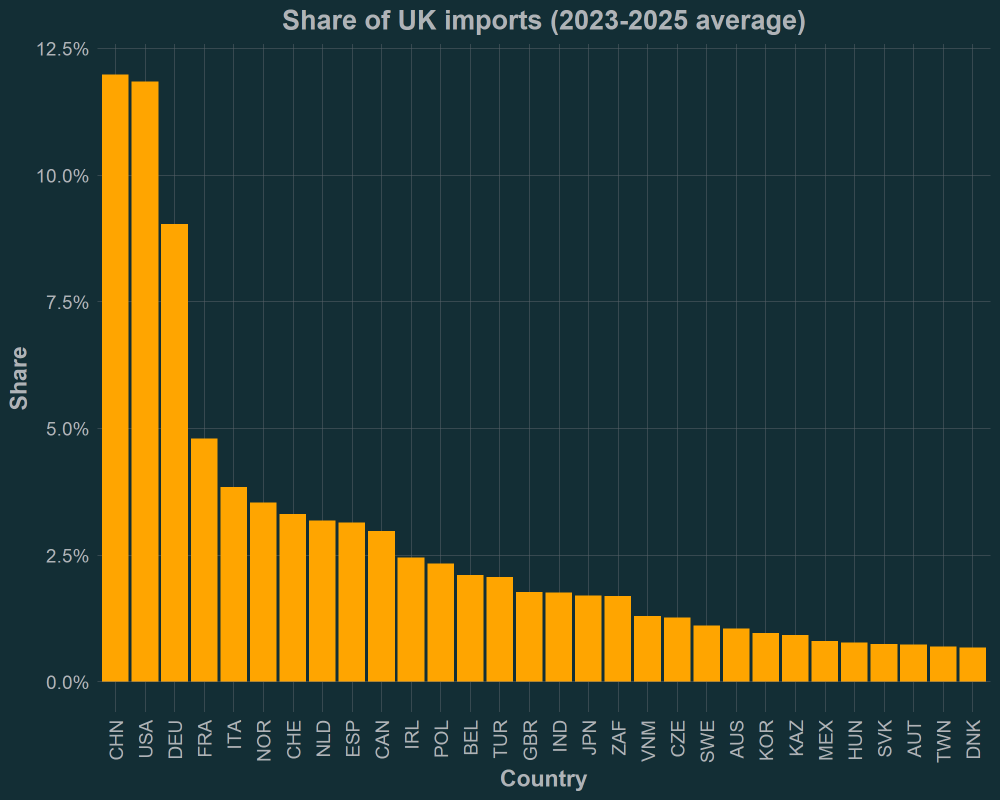
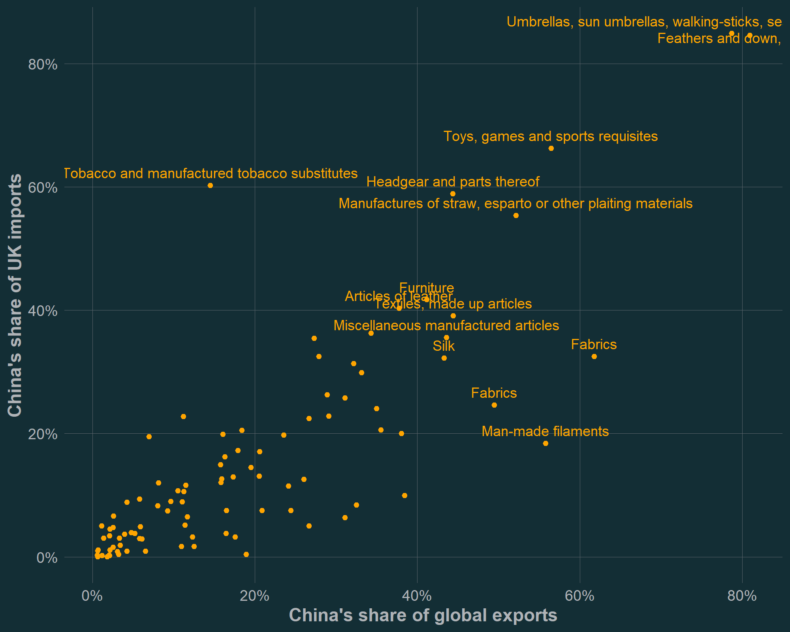
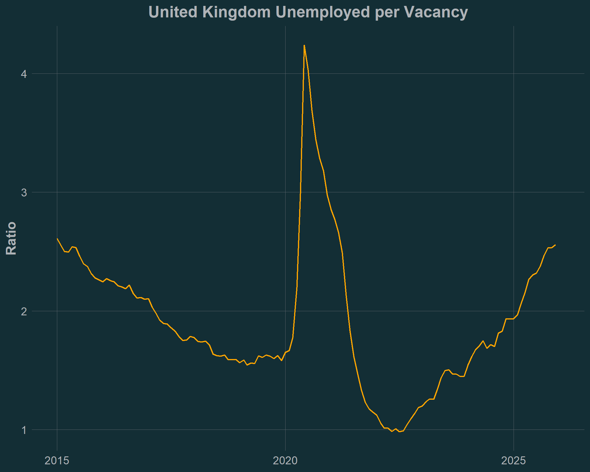
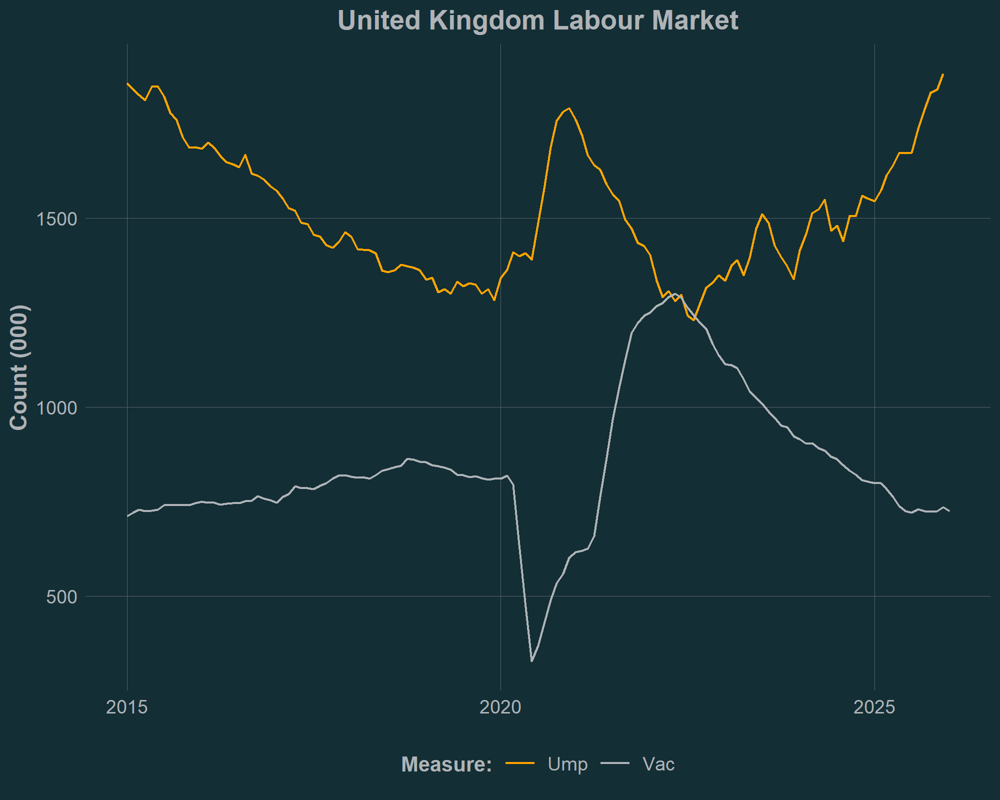
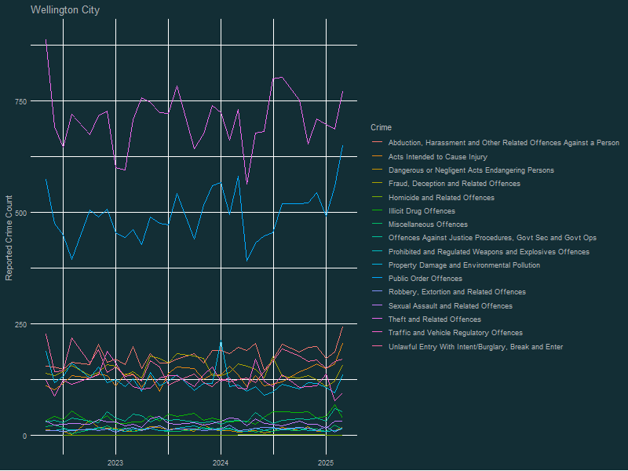
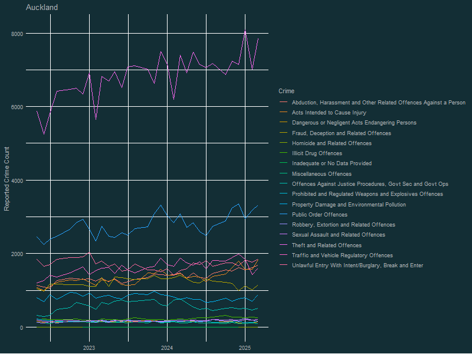
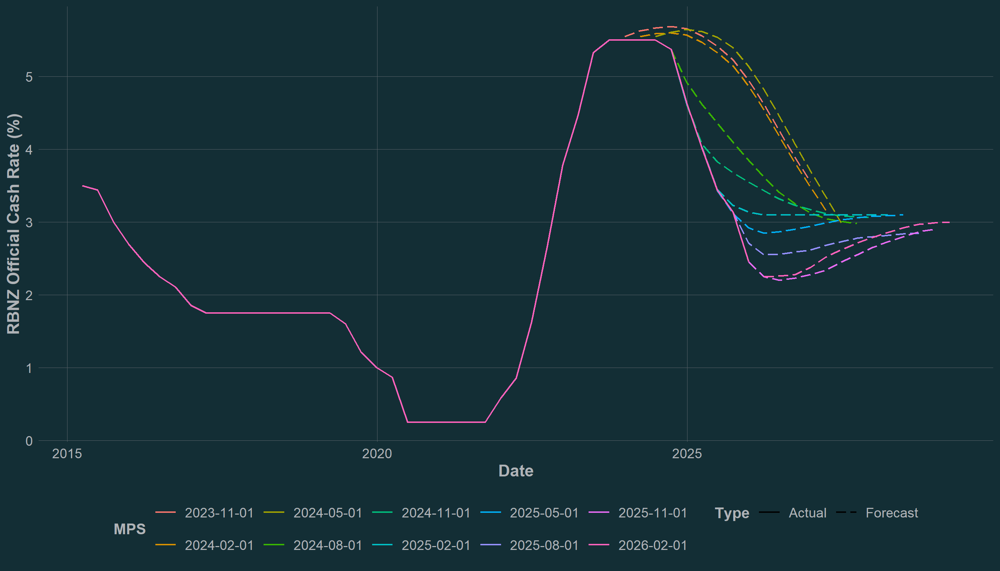
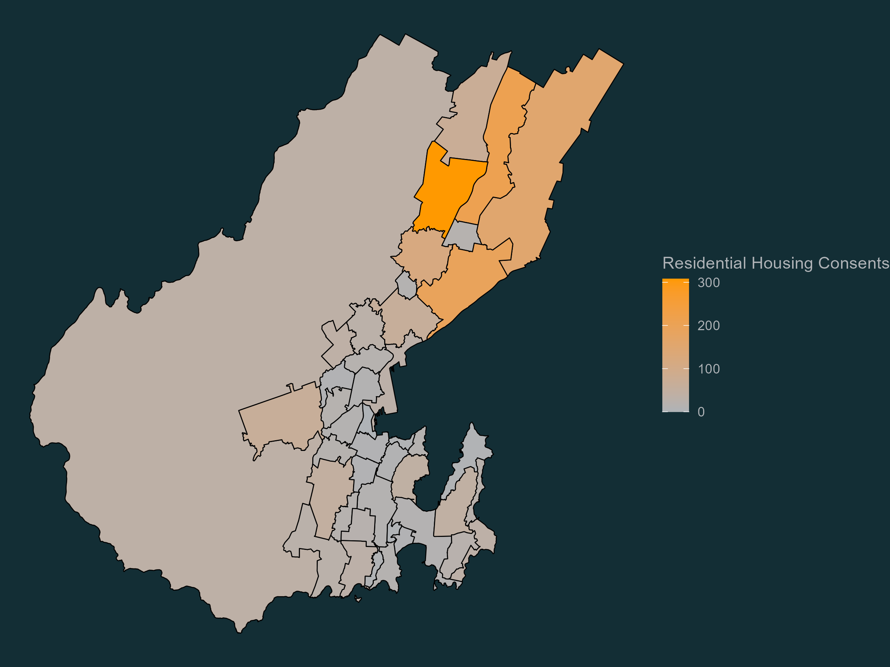

UK exposure to economic coercion
Economic coercion from other countries is a threat to UK resilience. Leading economics organisations are increasingly concerned about the problem. It's not hard to see why, the fallout from the Liberation Day Tariffs have been severe.
One way to identify risk is to find goods for which the UK relies on a single main supplier with few alternatives.
First, who are the UK's main suppliers?

Let's focus on the UK's largest import market, China (by replicating the code linked below we could look at the US or any other trading partner).
The UK is reliant on China for umbrellas and China makes up a large share of total global exports of umbrellas. Losing access to umbrellas would be sad but might not be a catastrophe. Man-made filaments are more concerning, but at least it doesn't make up a large share of the UK's imports. Lastly, China makes up a large share of the UK's imports of tobacco, but thankfully other countries may trade with the UK if China stops.

See code
United Kingdom Labour Market
Like many Kiwi's in their twenties, I've recently moved to the United Kingdom in search of new opportunities. One thing that I've been looking at while searching for work is the number of unemployed people and the number of job vacancies.
The graph below plots the ratio of unemployed people to the number of vacancies. Sadly, the ratio has been rising over the last few years.

Look at each component of this ratio.

See code
New Zealand Crime
Something that keeps coming up is the amount of crime around Wellington. People claim that crime increased in the city.
I decided to take a look at reported crime in Wellington, based on Police NZ data. It is important to interpret these cautiously; these figures reflect only reported crimes. The true level of crime is likely higher, and some types of crime are more likely to go unreported than others.

Interestingly, there is no clear sign that reported crime in Wellington has increased over 2022-2025.
I include Auckland City crime for comparison (below). There has been a clear increase in the amount of reported theft over the same period.

See code
Monetary policy

I wanted to track how the Reserve Bank of New Zealand (RBNZ) changes their future expectations for their main interest rate, the Official Cash Rate.
The graph (above) shows the RBNZ's forecasted OCR in each Monetary Policy Statement since the end of 2023.
See code
Urban economics

In my research, I needed to know how many new residential houses have been built over 2013-2019.
The graph above shows the suburbs in Wellington City that had the most housing consents.
See code
A graphical representation of the different approaches to the ability-to-pay tax.
Equal absolute sacrefice

Equal proportional sacrefice
See code